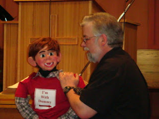

Alumni Report
2/20/2011
{kind=link}

Wilson Kindred graduated from the Maher Home Course of Ventriloquism just over two years ago. Today he and his wife, Sharon, Travel across Canada, ministering to people in hospitals, nursing homes, prisons, schools, churches, and more through music, ventriloquism, and illusions.
Wilson's current "Lap Buddy" is "Evan Hardwood Kindling" whom the audience loves, as evidenced by the fact they find themselves waiting for the laughter to subside time and time again during a routine. They've had as many as three curtain calls, but have done more than two.
Some background: Wilson Kindred was born into a home of violence, witchcraft, and alcoholism. His mother and his siblings were victims of neglect and extreme verbal and physical violence at his father's hands. How did he get from that dark and painful environment to today's uplifting and healing ministry to others? You can read the complete story Here.
Wilson's current "Lap Buddy" is "Evan Hardwood Kindling" whom the audience loves, as evidenced by the fact they find themselves waiting for the laughter to subside time and time again during a routine. They've had as many as three curtain calls, but have done more than two.
Some background: Wilson Kindred was born into a home of violence, witchcraft, and alcoholism. His mother and his siblings were victims of neglect and extreme verbal and physical violence at his father's hands. How did he get from that dark and painful environment to today's uplifting and healing ministry to others? You can read the complete story Here.